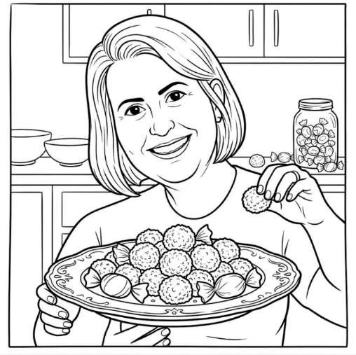

Bala de Coco Caseira
Na cozinha de Zelinda, bala de coco nunca foi doce para principiantes. Depois que a calda chega ao ponto, vem a parte que separa os fortes dos curiosos: puxar a massa ainda morna, esticar, dobrar e puxar de novo, até que ela perca a transparência e fique branca e brilhante.
A nora Wanda resolveu encarar o desafio. Puxou, puxou e puxou mais um pouco. Quando terminou, com os braços pedindo trégua, deu o veredito que a família nunca mais esqueceu: entre fazer bala de coco e ter um filho de parto normal, preferia o parto.
Zelinda, acostumada à receita, achou graça. E a bala de coco ganhou, desde então, um aviso de dificuldade que nenhum livro de culinária costuma trazer.

Ingredientes
1 kg de açúcar refinado
1 vidro de leite de coco (200 ml)
1 copo de água (utilize a mesma medida do vidro de leite de coco) 1 colher (sopa) de vinagre branco (ajuda a dar o ponto e puxar melhor)
Coco ralado para polvilhar e passar as balas
Modo de preparo
O Ponto da Calda: Em uma panela grande, coloque o açúcar, o leite de coco, a água e o vinagre branco. Misture levemente antes de ir ao fogo. Leve ao fogo médio e deixe ferver sem mexer muito para não açucarar, até atingir o ponto de bala dura (quando uma gotinha da calda pingada em um copo com água fria forma um ponto firme que você consegue moldar).
O Descanso no Mármore: Despeje a calda quente sobre uma superfície lisa untada (como uma pia de mármore ou granito limpa). Deixe esfriar o suficiente para conseguir manusear sem se queimar.
O Desafiador Ritual de Puxar (A famosa parte da Wanda!): Assim que a massa estiver morna, comece a puxá-la, esticando e dobrando repetidas vezes, até que ela mude de cor, passando de translúcida para um branco perolado e bem brilhante. É aqui que o braço pede trégua e rende boas risadas na cozinha!
O Corte e Embalagem: Com uma tesoura untada, corte a massa esticada em pedacinhos do tamanho desejado direto sobre uma travessa com coco ralado. Passe bem as balas no coco e armazene.